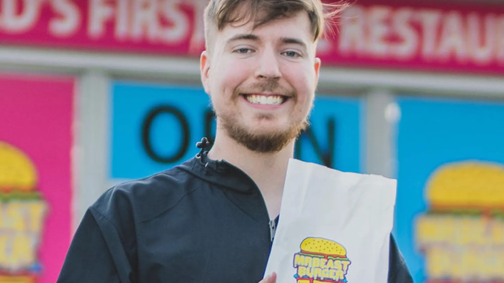

Donaldson grew up in Greenville, North Carolina. He began posting videos to YouTube in early 2012, at the age of 13,under the handle MrBeast6000. His early content ranged from Let's Plays to "videos estimating the wealth of other YouTubers".He went viral in 2017 after his "counting to 100,000" video earned tens of thousands of views in just a few days, and he has become increasingly popular ever since, with most of his videos gaining tens of millions of views.His videos became increasingly grand and extravagant.[15] Once his channel took off, Donaldson hired some of his childhood friends to co-run the brand. As of 2023, the MrBeast team is made up of over 250 people, including Donaldson himself.Other than MrBeast, Donaldson runs the YouTube channels Beast Reacts, MrBeast Gaming, MrBeast 2 (formerly MrBeast Shorts)[17] and the philanthropy channel Beast Philanthropy.He formerly ran MrBeast 3 (initially MrBeast 2), which is now inactive.
James Stephen Donaldson was born on May 7, 1998 in Wichita, Kansas.[28] He was mainly raised in Greenville, North Carolina.[29][30] He moved often and was under the care of au pairs due to his parents working long hours and serving in the military. His parents divorced in 2007.In 2016, Donaldson graduated from Greenville Christian Academy, a small private evangelical Christian high school in the area. He briefly attended East Carolina University before dropping out.[31][32] After dropping out, Donaldson and his friends tried to analyze YouTube's recommendation algorithm and sought to deduce how to create viral videos. Donaldson recalled during this time, "There’s a five-year point in my life where I was just relentlessly, unhealthily obsessed with studying virality, studying the YouTube algorithm. I woke up. I would Uber Eats food. And then I would sit on my computer all day just studying shit nonstop with [other YouTubers]."
Donaldson uploaded his first YouTube video in February 2012, at the age of 13, under the name of "MrBeast6000".His early content ranged from Let's Plays, mainly focused on Minecraft and Call of Duty: Black Ops II, videos estimating the wealth of other YouTubers,[36] videos that offered tips to upcoming YouTube creators and commentary on YouTube drama. Donaldson appeared infrequently in these videos. In 2015 and 2016, Donaldson began to gain popularity with his "Worst intros on YouTube" series poking fun at YouTube video introductions.[By mid-2016, Donaldson had around 30,000 subscribers. In fall 2016, Donaldson dropped out of East Carolina University to pursue a full-time career as a YouTuber.His mother did not approve of this and made him move out of the family home. As his channel grew, Donaldson hired four childhood friends – Kris Tyson (born Chris Tyson), Chandler Hallow, Garrett Ronalds and Jake Franklin – to contribute to his channel.Franklin left the crew in 2020. Afterwards, Karl Jacobs, previously a cameraman, was promoted to take his place.
In January 2017, Donaldson published an almost day-long video of himself counting to 100,000, which became his breakthrough viral video.The ordeal took him 40 hours, with some parts sped up to "keep it under 24 hours." Donaldson gained popularity during this period with stunts, such as attempting to break glass using a hundred megaphones, watching paint dry for an hour, attempting to stay underwater for 24 hours, which ended up failing due to health issues, and an unsuccessful attempt to spin a fidget spinner for a day.[41] By 2018, Donaldson had given out $1 million through his outlandish stunts, which earned him the title of "YouTube's biggest philanthropist". During the PewDiePie vs T-Series rivalry in 2018, a competition to become the most-subscribed channel on YouTube, Donaldson bought billboards and numerous television and radio advertisements to help PewDiePie gain more subscribers than T-Series. During Super Bowl LIII, he bought multiple seats for himself and his team, whose shirts spelled out "Sub 2 PewDiePie."
In March 2019, Donaldson organized and filmed a real-life battle royale competition in Los Angeles with a prize of $200,000 (two games were played, making game earnings of $100,000 for each game) in collaboration with Apex Legends.The event and prize pool was sponsored by Apex Legends publisher Electronic Arts. Donaldson was accused of using counterfeit money in his video titled "I Opened A FREE BANK", published on November 23, 2019. He later explained that he used fake money to avoid participant safety concerns and that participants received real checks after the shoot. In April 2020, Donaldson created a rock, paper, scissors competition stream that featured 32 influencers and a grand prize of $250,000, which at the time became YouTube's most-watched live Original event with 662,000 concurrent viewers.The event was won by Nadeshot.[49] In October 2020, Donaldson hosted another influencer tournament, this time trivia, featuring 24 competitors with a grand prize of $300,000. The tournament was won by siblings Charli and Dixie D'Amelio, which caused controversy due to claims that they cheated.